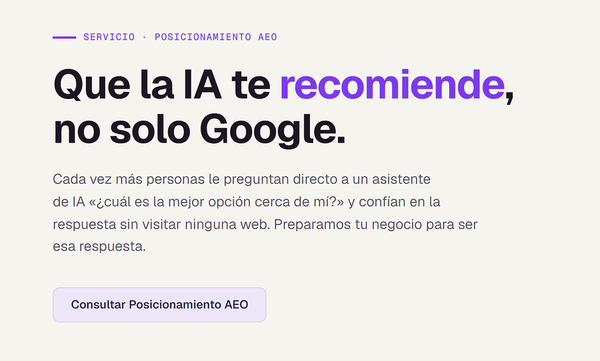

Diseño web
Renovamos tu web actual con tu marca real: tus servicios, tus precios y tu WhatsApp a un toque.
Desde 100 USDConsultoría digital de alto nivel para negocios privados y pymes en Colombia, México, Estados Unidos y el resto del mundo.
Pide tu diagnóstico SEO gratis
Empezamos por tu web. Te mandamos gratis su diagnóstico SEO (tu puntuación de 0 a 100 y las 5 correcciones más urgentes, en PDF) y, si hace falta, la renovamos con tu marca real. ¿No tienes web? Te la creamos.
Renovamos tu web actual con tu marca real: tus servicios, tus precios y tu WhatsApp a un toque.
Desde 100 USD
Sabemos exactamente dónde tu negocio pierde tiempo y dinero, con evidencia, no suposiciones.
Desde 200 USD
Que la Inteligencia Artificial recomiende tu negocio, no solo las búsquedas en Google.
Desde 150 USD

Somos Dastan Tamayo, fundador de DASTAN X-TECH, e Isdiel Martínez, consultor y estratega digital. Trabajamos con negocios privados y pymes de cualquier sector —clínicas, spas, salones, servicios a domicilio, comercios, despachos— que hacen un buen trabajo pero no lo reflejan en internet.
DASTAN X-TECH empezó con nuestro propio negocio: hacíamos un buen trabajo, pero en internet casi no se veía. Estudiamos cómo se gana visibilidad hoy —en Google, en las redes y en las respuestas de la IA— y así nació esta consultora. Nuestro trabajo es que internet refleje el que ya haces tú.
Déjanos tu nombre, tu web y tu WhatsApp, y te mandamos gratis tu puntuación SEO de 0 a 100 y las 5 correcciones más urgentes, en un PDF.
Pedir mi diagnóstico por WhatsApp